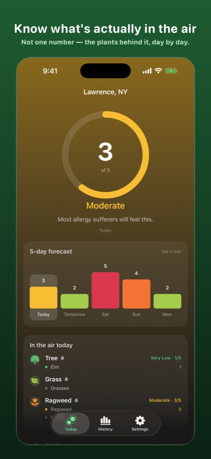
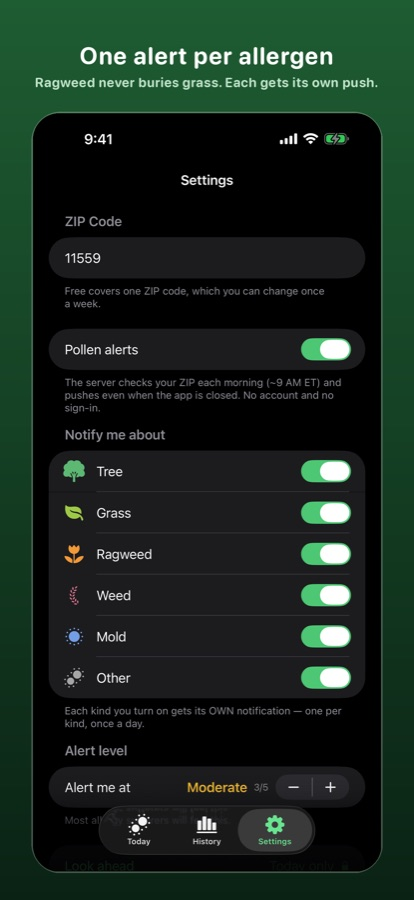
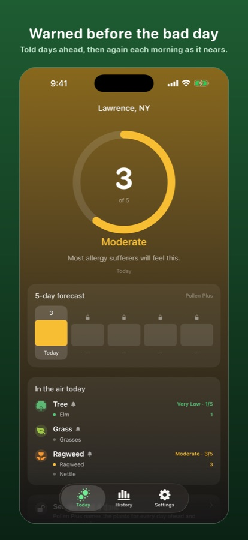
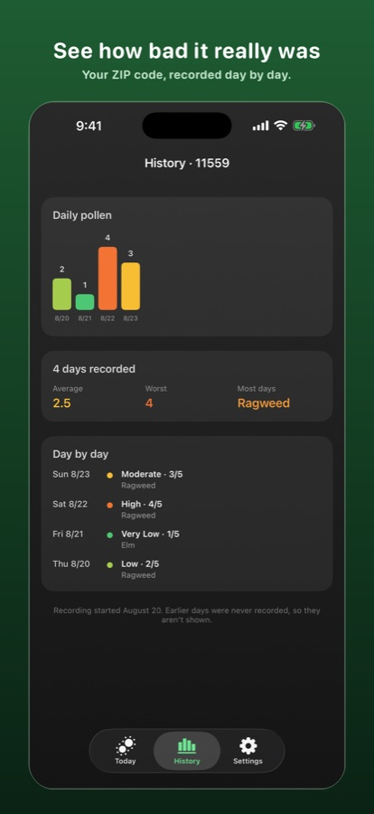

Know what's actually in the air.
Most pollen apps show you one number. Pollenary shows you which plants are behind it — for every day of the forecast — and warns you before a bad day arrives.
US ZIP codes · iOS 17+ · No sign-up, no ads

Plant by plant, day by day
Ragweed on Saturday. Grass on Sunday. Tree pollen all week. Named per day, not blended into one score.
One alert per allergen
Pick the ones you react to. Each gets its own notification, so a ragweed warning never buries a grass warning.
Warned early
Told days ahead, then again each morning as the bad day gets closer — and the wording tracks it.
No account. Ever.
No sign-up, no email, no password, no location permission. A ZIP code and your settings. That's all we hold.
Where the numbers come from
Severity comes from Google's Pollen API on the Universal Pollen Index (0–5), at roughly 1 km resolution, covering tree, grass and weed pollen plus individual species.
We did not take that on trust. Before shipping we compared candidate sources against measured counts from certified pollen-counting stations. Google tracked the measured grain counts; a widely used alternative did not, and could not be rescaled to fit. That source is still used in Pollenary for plant names, but never for severity.
Read the full comparison, with the numbers →
Free vs Plus
| Free | Plus — $0.99/mo | |
|---|---|---|
| Today's level and the plants behind it | Yes | Yes |
| Daily alert | Today only | Up to 5 days ahead |
| 5-day forecast | — | Yes |
| Plants for each day ahead | — | Yes |
| Recorded history | — | Yes |
| ZIP codes | 1, change weekly | 10 a day |



Common questions
Which pollen is in the air today?
Pollenary names the individual plants — ragweed, nettle, grasses, elm and so on — grouped as Tree, Grass, Ragweed, Weed, Mold or Other, each with its own 0–5 severity. Most apps collapse all of that into a single number.
Why do pollen apps disagree?
Because most pollen numbers are model forecasts, not measurements. Across 175 place-days in 35 US cities we found two widely used sources agreed on whether a day was "bad" only about half the time. The full comparison is here.
Does it need an account?
No. No sign-up, no email, no password. Pollenary never asks for location permission — you type a ZIP code.
What is the Universal Pollen Index?
A 0–5 scale: 0 None, 1 Very Low, 2 Low, 3 Moderate, 4 High, 5 Very High. Explained in full here.
Is it free?
Yes. Today's pollen and a daily alert are free forever. Pollenary Plus is $0.99 a month for the 5-day forecast, per-day plants, early alerts and history.
Pollen levels shown in Pollenary are a forecast, not a medical measurement. Pollenary is not a medical device and does not diagnose or treat any condition. Talk to a doctor about your allergies.